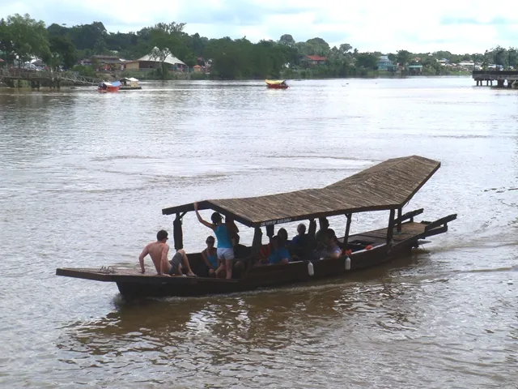
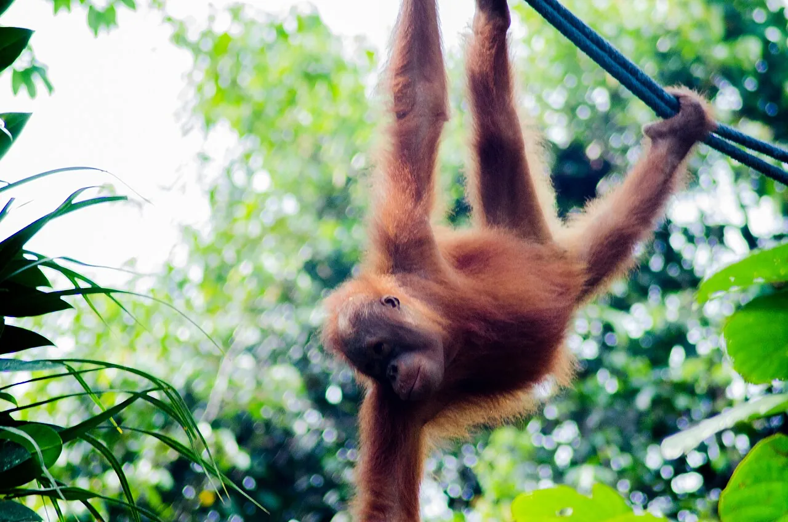
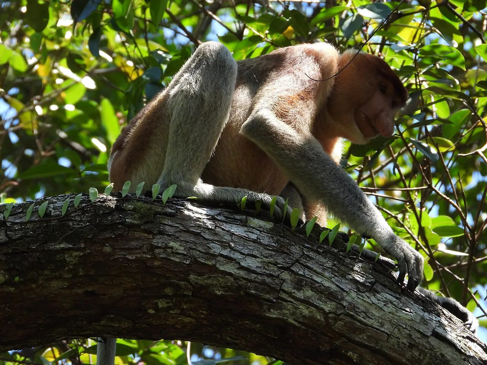

Kuching Logistics Console
Fly in cheap from KL or Singapore, barely touch transport in the walkable old town, and orbit the parks, caves, longhouse and islands on half- and full-day loops back to your Kuching bed.
Fare board — getting in & out
no direct Europe leg · arrive via a hubGetting around — mode panel
old town is walkable; Grab is the defaultGrab thins out coming back from the outlying sites.
Semenggoh, Santubong and Bako village all get sparse on the return leg — ask your driver to wait or pre-book the pickup. [8]
The day-trip orbit
every tile is a half or full day, back to your Kuching bed
Semenggoh Wildlife Centre

Santubong / Damai + Sarawak Cultural Village
Annah Rais Bidayuh longhouse
Kubah National Park
The NE monsoon (≈Nov–Feb) is the limiter on anything with a boat.
Satang most of all, occasionally the Bako crossing. The land orbit — Semenggoh, the Cultural Village, the caves, Kubah, Annah Rais — runs year-round; just expect afternoon downpours. [20]
How to sequence it
for a relaxed-to-active coupleHalf-day around the 9am or 3pm feeding; pair the morning feed with a city afternoon.
Bus/Grab to the village, boat to HQ; boat access closes mid-afternoon. A day trip is comfortably feasible.
Cultural Village show plus beach resorts and Mt Santubong trails; the Grand Margherita shuttle keeps it carless.
Pair the two Bau caves in one half-day, but mind the staggered Mon/Tue closures.
The longhouse has no public bus and reads better guided; Satang is boat-only and runs best May–September.
Sources
22 citationsvendor-blog
official
official
news
vendor-blog
vendor-blog
vendor-blog
vendor-blog
news
vendor-blog
vendor-blog
vendor-blog
official
official
forum
vendor-blog
vendor-blog
vendor-blog
forum
vendor-blog
vendor-blog
vendor-blog